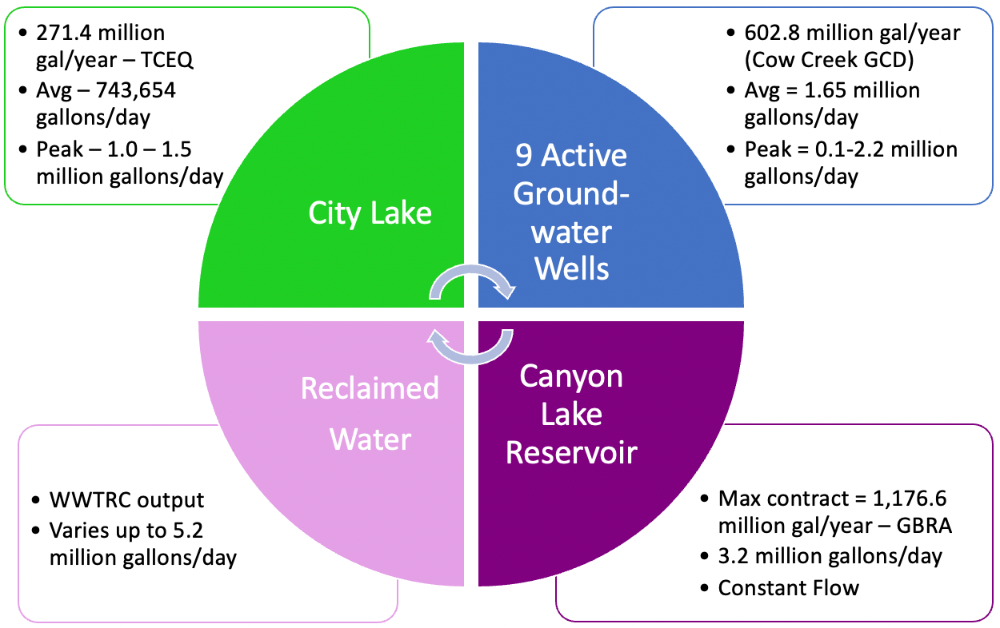
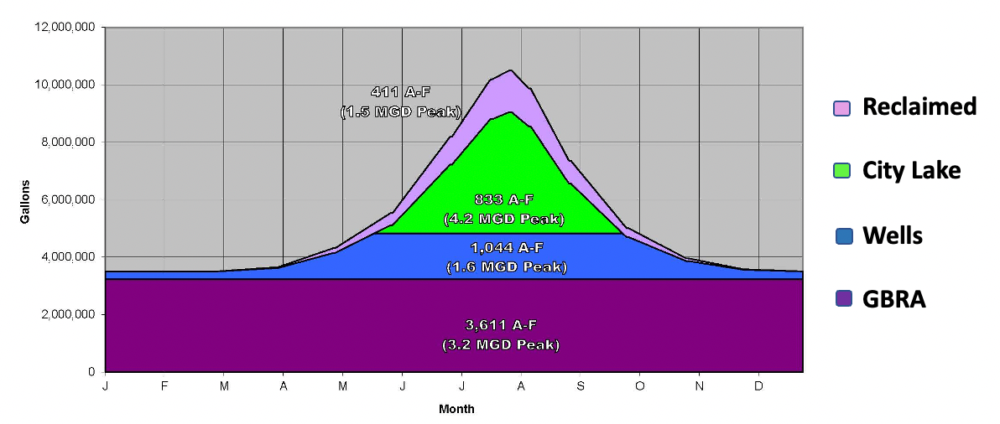

To learn more about your utility please:
- (1) Select your utility from the map (left) or dropdown menu (above) and
- (2) Explore data by adding layers to the map (left) or browsing through the tabs (above).
- (3) You can also enter your address below to find your location within the water service boundary
Select a utility
Select a stream gage or reservoir to see plot
The plot below can show either the streamflow through a stream gage or the storage of a reservoir. Depending on the site chosen on the map, stream gage or reservoir, the y-axis of the plot will differ. For stream gages, the units are in Cubic Feet per Second (cfs). For reservoirs the units are a percentage of full capacity. On the x-axis are the past two years of observed data. The color of each observation represents the status of that observation as it compares to historical data. The “Turn stats layer on” checkbox allows you to dive into statistics/percentiles.
Select a utility to see water demand
The City of Boerne has three main sources of potable water and an additional source in reclaimed water. The following is its contract allocation
The bottom two plots show traces of observed demand. The first plot, Daily Demand, shows how much water was consumed each day for each recorded year and is measured in million(s) of gallons per day. The second plot, Cumulative Demand, shows cumulative water consumption day-by-day for a given year and is measured in million(s) of gallons. Both of these plots use the checkboxes to highlight different years.
Daily Demand
Cumulative Demand
Peak Water Production Capacity
The graphic below depicts how the city manages its sources, specifically to meet peak demand during summer months. As can be seen, water from Canyon Lake Reservoir (GBRA) serves as the city's base load, meeting the majority of demand during non-summer months. Groundwater wells are affected by rainfall and therefore meet a much smaller load of demand compared to GBRA. The remainder of peak demand during summer months is met by Boerne Lake and reclaimed water, which is primarily used for outdoor irrigation.

CLB represents the population within a city limit boundary. WSB represents the population serviced by the utility.
This plot represents the number of people utilizing water from Boerne Utilities in two forms. The solid purple line indicates
the City of Boerne population and the dashed blue line shows the total number of water customers.
CLB represents the population within a city limit boundary. WSB represents the population serviced by the utility.
This plot represents the number of people utilizing water from Boerne Utilities in two forms. The solid purple line indicates the City of Boerne population and the dashed blue line shows the total number of water customers.
Select a well from the map for more information
Each of these plots has a top axis depicting the land surface. This is to illustrate the depth of the well at which water is observed (i.e., water level).
The x-axis (horizontal line) of this first plot, Groundwater Levels Relative to Historic Levels, includes the past two years of observed data. The color represents the status of that observation (from very dry to very wet) as it compares to historical data. It is important to keep in mind the depth of the well when looking at this information. The “Turn stats layer on” checkbox allows a user to dive into statistics/percentiles. The y-axis (vertical line) is the feet below surface at which the water level is at.
The y-axis (vertical line) of this plot, Monthly Mean Trends, remains the same as above, but the water level is a monthly average and shows how far below the surface water was accessible. This is also an indication of higher, lower or average periods of precipitation or an increase in water consumption. It is normal for levels to drop during the summer. The checkbox allows users to observe monthly trends for any given year.
The y-axis (vertical line) of this plot, Long-term annual trands, remains the same as above, but the water level is a yearly average.
Select a sub-basin to see how drought changes over time
By first selecting a sub-basin from the drop-down menu below, the plot will show historic drought conditions for that watershed and the category of drought (Zero-D4) throughout the years. The bar under the headline Percent of "sub-basin name" basin by status represents the most up to date observations of the percentage of area under observed drought.
To learn more about current drought conditions, visit the US Drought Monitor of Texas, or Boerne Water Conservation.
Select a precipitation gage from the map for more information
These two plots show first, Monthly Precipitation, and second Cumulative Precipitation. The Monthly Precipitation plot shows how much rain/precipitation fell each month, in inches, at an observed site. The Cumulative Precipitation plot shows the sum amount of precipitation day-by-day, in inches. The checkboxes can be used to highlight different years.
Select a utility to see reclaimed water produced
Within the City of Boerne, since 2016 reclaimed water has been a source of water (like Canyon Lake, Boerne Lake, and underground wells), but it is used strictly for outdoor irrigation. Like demand, these plots use the checkboxes to highlight different years. The first plot, Daily Reclaimed Water Produced, shows daily observed reclaimed water used for each recorded year and is measured in million(s) of gallons per day. The second plot, Reclaimed Percent of Total Water, shows the percentage that reclaimed water makes up of the total amount of water used by the city. In other words, the total is the sum of all demand (including reclaimed water use). Therefore, this plot represents the percentage of total that is reclaimed.